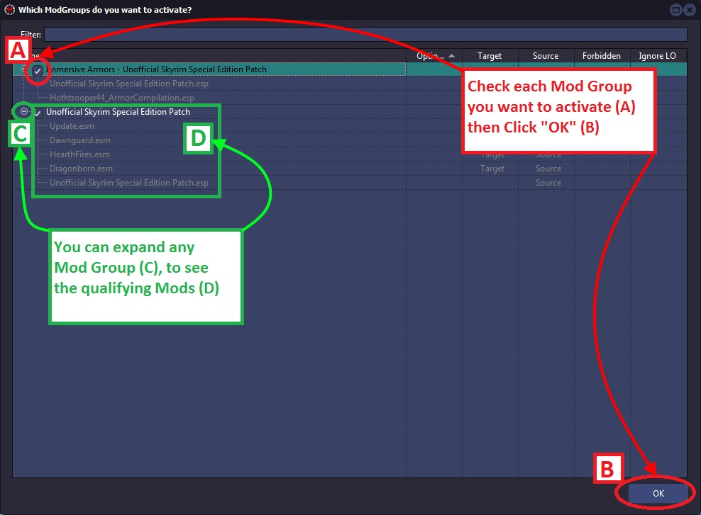
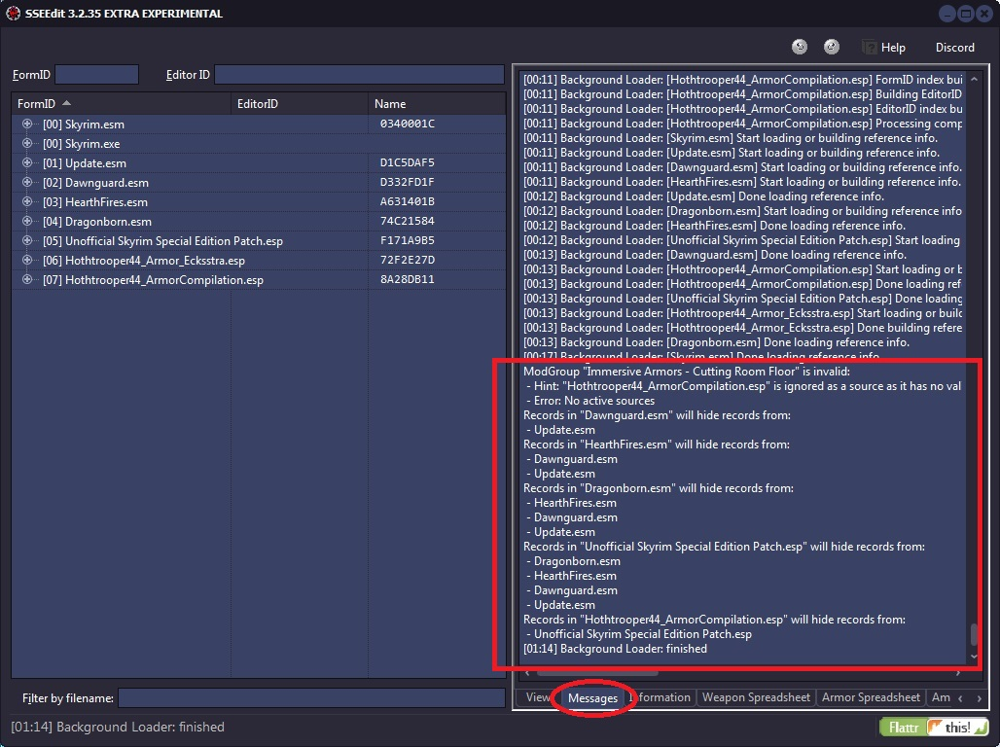
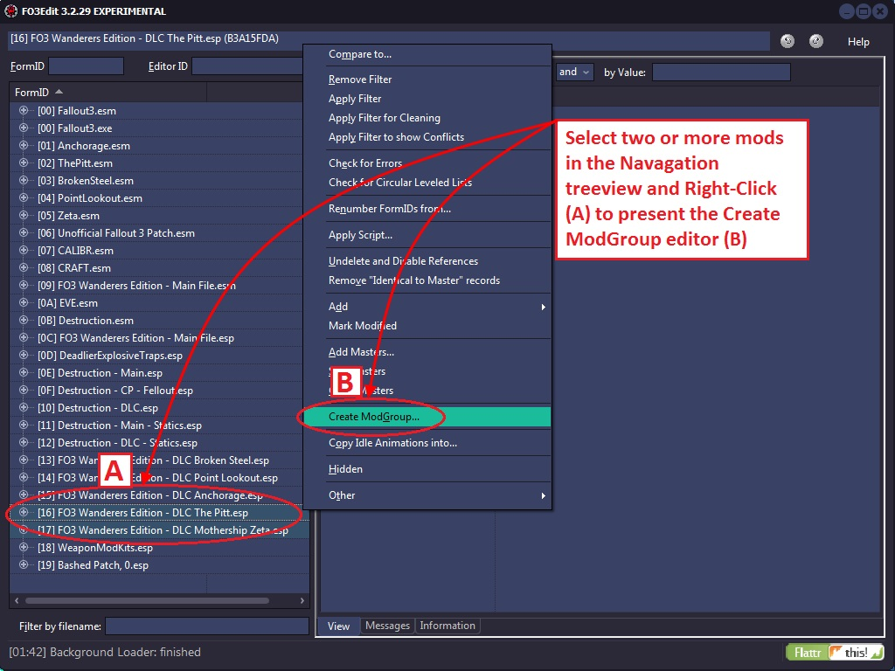
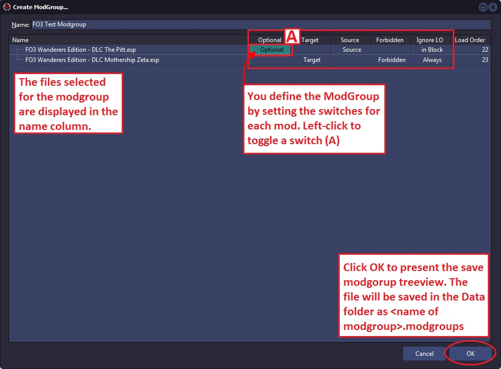
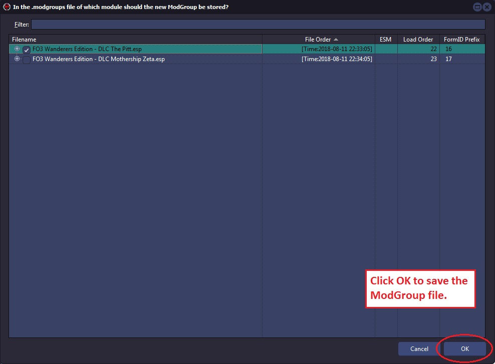
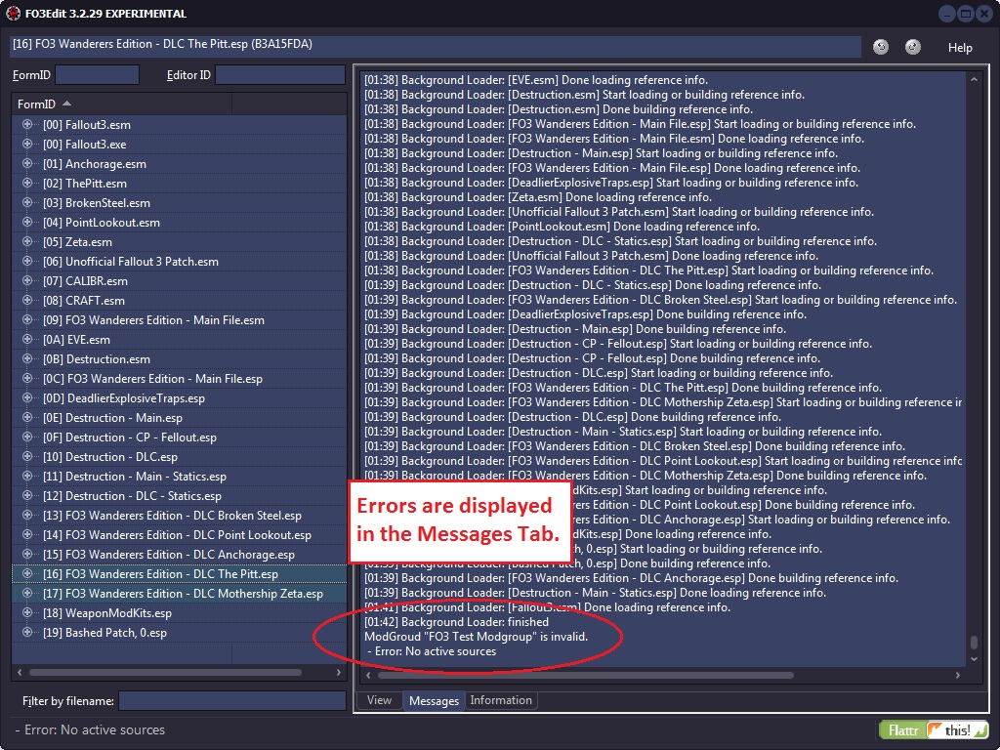
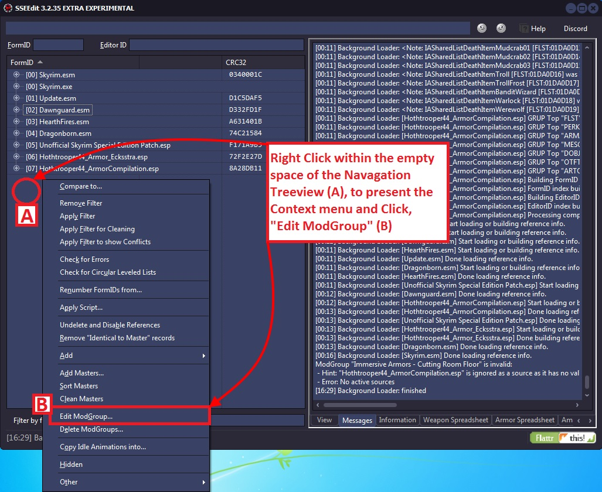
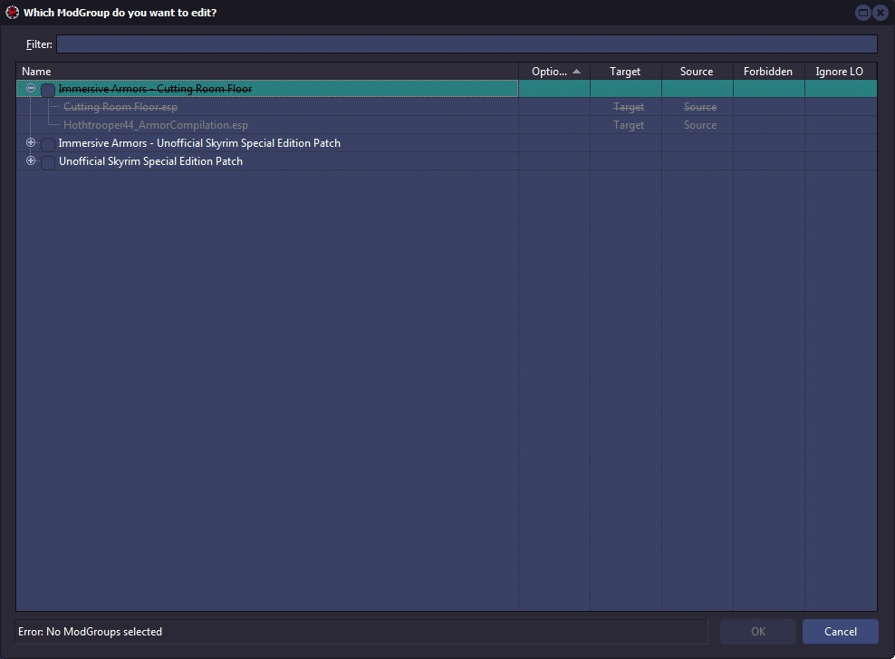

3.1 What are ModGroups?
The answer to the "I installed FCOM and everything is red! What do I do now?" question.
There are groups of mods that, while raising heaps of conflict warnings, should be considered as non-conflicting. e.g. if you've installed FCOM then you are not interested in seeing conflicts between the mods that make up FCOM. The solution for this is to define a mod group. Mod groups are stored in a TES4View.modgroups file in the same directory as TES4View.exe. There already is such a file included with a few example mod groups defined. This is just an example and not meant as a guarantee that these specific modgroups are "clean" and conflicts can safely be ignored.
Not all modgroups defined in that file will necessarily show up in the selection list. ModGroups for which less then 2 plugins are currently active are filtered. If the load order of plugins doesn't match the order in the mod group it is also filtered.
What's the effect of having a mod group active?
When the detail view for a record is generated and multiple files of the same mod group modify this record, then only the newest of the files in that modgroup will be shown. So instead of seeing 5 different files with numerous conflicts you are only seeing the newest file in that mod group. This also affects conflict classification.
It's worth pointing out here that if a record is overridden by both plugins in a mod group and other plugins that normal conflict detection will still work perfectly.
Basically this system can be used to reduce a lot of noise from the conflict reports.
3.2 How do I choose a ModGroup?
For a modgroup the be activatable, the order of the mods in the load order and modgroup must match.
If a modgroup is active, what it essentially means is that for each record that is contained in more than one mod of the modgroup, only the last (in load order) is visible. That's it. The invisible record versions simply don't participate in the normal conflict detection mechanisms at all.
A modgroup does not perform any merge or make any changes to any mod. All it does it hide away version of records that you've stated (by defining the modgroup) that you've already checked them against each other and the hidden record is simply irrelevant.

The Mod Group selection scteen will show all qualifying mod groups for activation.

After the mod groups are activated you will see a report in the Messages tab.
3.3 Built In Editor
3.3.1 Creating a ModGroup form within xEdit.




3.3.2 Editing a ModGroup form within xEdit.


You will not be able to activate the Mod Group if all the conditions are not met.
3.4 ModGroup Syntax
[xEdit EXE Name].modgroups i.e. SSEEdit.modgroups for SSEEdit. Save in the same folder as the EXE.
[Plugin Name].modgroups i.e. for Someplugin.esp, Someplugin.modgroups. Save the file in your Data folder instead.
Prefixes are processed from left to right. #@Plugin.esp is the same -Plugin.esp. They combine "negatively" not positively.
- without prefix file is both a target and a source
- + The file is optional
- - The file is neither a target nor a source.
- } Ignore load order completely
- { Ignore load order among a consecutive block of mods marked with this.
- @ File is not a source
- # File is not a target
- ! File is forbidden. If the listed module is active, the modgroup is invalid.
- <filename>:CRC32
If a module is followed by a list of one or more CRC values, the modgroup is only available if the module has one of the listed CRCs. Source means that if a record in this mod is found, then it will hide the versions of the same record from all mods listed above it that are targets.
3.5 Example ModGroups
File: Bells of Skyrim.modgroups
[Bells of Skyrim] @Update.esm +@Unofficial Skyrim Special Edition Patch.esp #Bells of Skyrim.esp [Unofficial Skyrim Special Edition Patch] @Update.esm Dawnguard.esm HearthFires.esm Dragonborn.esm #Unofficial Skyrim Special Edition Patch.esp